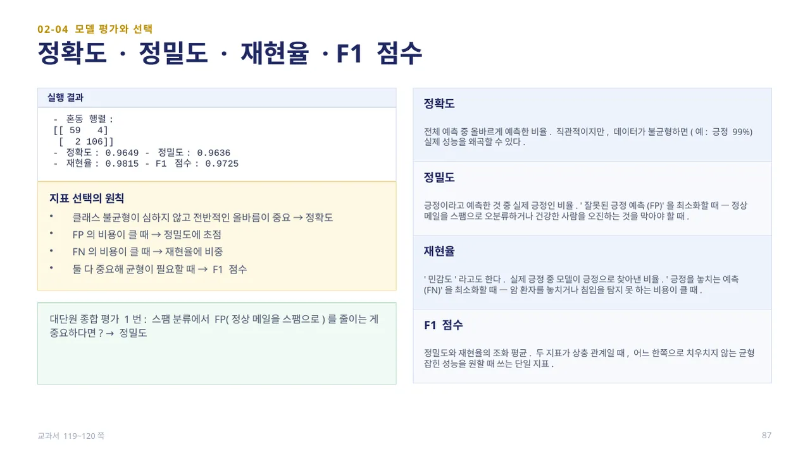
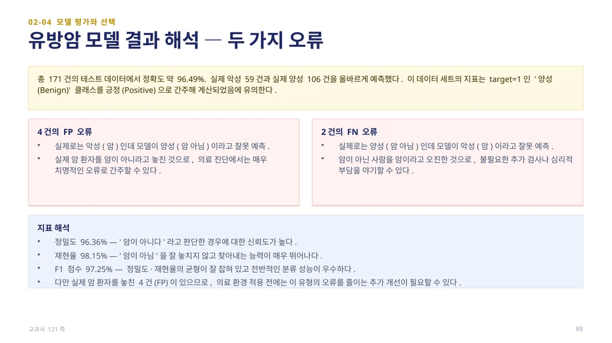
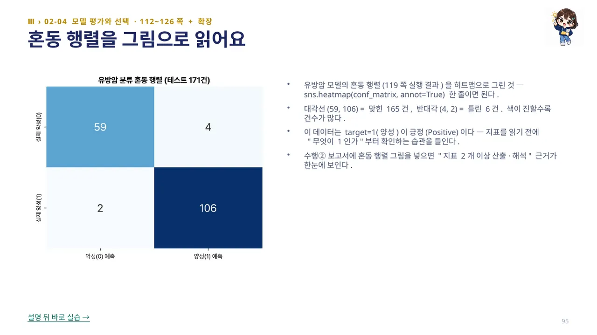

이진 분류에서 탐지하려는 관심 범주를 긍정(Positive, 1), 나머지를 부정(Negative, 0)이라 합니다(예: 암 진단 모델에서는 암 환자가, 스팸 분류에서는 스팸 메일이 긍정). 혼동 행렬은 예측과 실제의 일치·불일치를 네 가지로 요약합니다.
TP(True Positive)는 실제 긍정을 긍정으로 정확하게 예측(실제 암 환자를 암이라고 진단), FN(False Negative)은 실제 긍정을 부정으로 잘못 예측(실제 암 환자를 암이 아니라고 진단 — 놓친 오류), FP(False Positive)는 실제 부정을 긍정으로 잘못 예측(건강한 사람을 암이라고 오진), TN(True Negative)은 실제 부정을 부정으로 정확하게 예측(건강한 사람을 암이 아니라고 진단)입니다. True/False는 예측이 맞았는가, Positive/Negative는 무엇으로 예측했는가를 나타냅니다. (교과서 117~118쪽)
17~21행에서 confusion_matrix·accuracy_score·precision_score·recall_score·f1_score를 각각 계산합니다. 실행 결과와 각 지표를 읽는 법은 다음 슬라이드에서 확인합니다. (교과서 118~119쪽)

혼동 행렬 [[59, 4], [2, 106]]을 바탕으로 정확도 0.9649, 정밀도 0.9636, 재현율 0.9815, F1 점수 0.9725가 계산됩니다. 정확도는 전체 예측 중 올바르게 예측한 비율이지만, 데이터가 불균형하면 실제 성능을 왜곡할 수 있습니다. 정밀도는 긍정이라고 예측한 것 중 실제 긍정인 비율로 ‘잘못된 긍정 예측(FP)’을 최소화할 때 중요합니다.
재현율(민감도)은 실제 긍정 중 모델이 긍정으로 찾아낸 비율로 ‘긍정을 놓치는 예측(FN)’을 최소화할 때 중요하고, F1 점수는 정밀도와 재현율의 조화 평균으로 두 지표가 상충할 때 균형 잡힌 성능을 보여 줍니다. 클래스 불균형이 심하지 않고 전반적인 올바름이 중요하면 정확도, FP 비용이 크면 정밀도, FN 비용이 크면 재현율, 둘 다 중요하면 F1 점수를 봅니다(예: 스팸 분류에서 FP를 줄이는 게 중요하면 정밀도). (교과서 119~120쪽)

총 171건의 테스트 데이터에서 정확도 약 96.49%입니다. 이 데이터 세트에서는 target=1인 ‘양성(Benign, 암 아님)’ 클래스를 긍정(Positive)으로 간주해 지표를 계산합니다. 4건은 실제로는 악성(암)인데 모델이 양성(암 아님)이라고 잘못 예측한 경우로, 실제 암 환자를 놓친 것이라 의료 진단에서는 매우 치명적인 오류로 볼 수 있습니다.
2건은 실제로는 양성(암 아님)인데 모델이 악성(암)이라고 잘못 예측한 경우로, 불필요한 추가 검사나 심리적 부담을 야기할 수 있습니다. 정밀도 96.36%·재현율 98.15%·F1 점수 97.25%로 전반적인 분류 성능은 우수하지만, 실제 암 환자를 놓친 4건이 있으므로 의료 환경에 적용하기 전에는 이 유형의 오류를 줄이는 추가 개선이 필요할 수 있습니다 — 지표가 좋아도 오류의 유형을 함께 봐야 합니다. (교과서 121쪽)

유방암 모델의 혼동 행렬(119쪽 실행 결과)을 sns.heatmap(conf_matrix, annot=True) 한 줄로 히트맵으로 그릴 수 있습니다. 대각선(59, 106)은 맞힌 165건, 반대각선(4, 2)은 틀린 6건을 나타내며, 색이 진할수록 건수가 많습니다.
이 데이터는 target=1(양성)이 긍정(Positive)이므로, 지표를 읽기 전에 ‘무엇이 1인가’부터 확인하는 습관이 중요합니다. 수행② 보고서에 혼동 행렬 그림을 넣으면 ‘지표 2개 이상 산출·해석’ 근거를 한눈에 보여 줄 수 있습니다.
 인공지능 파이썬 실무
인공지능 파이썬 실무